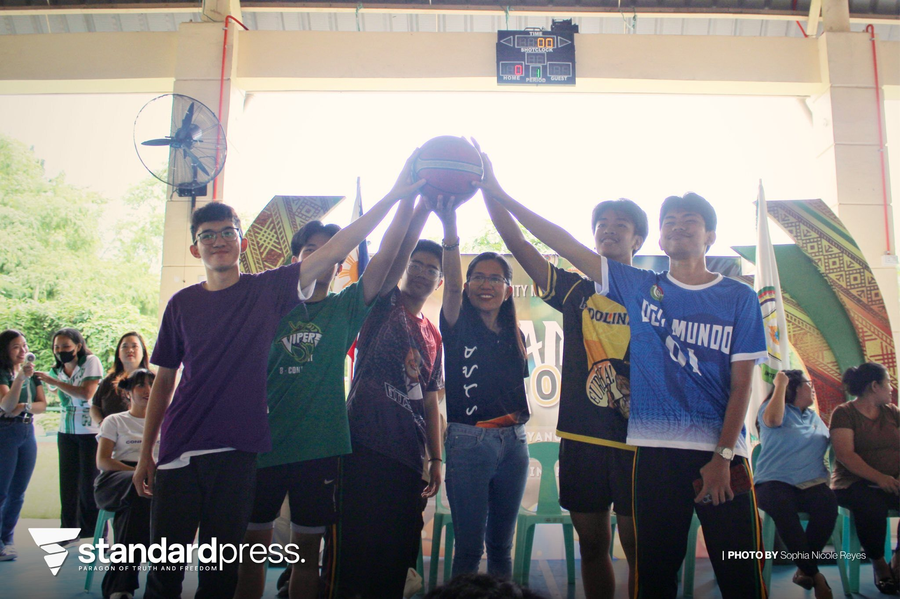
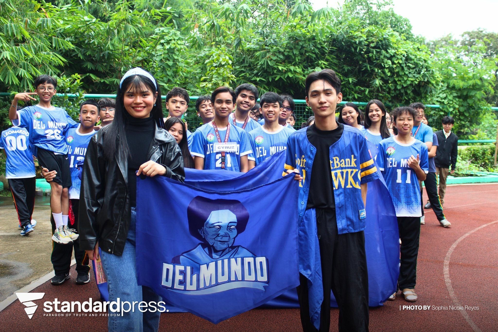
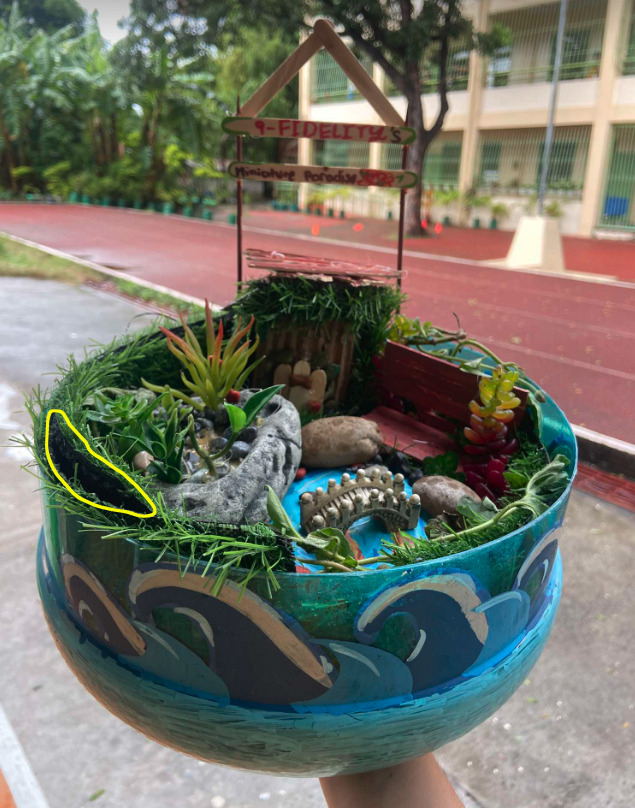
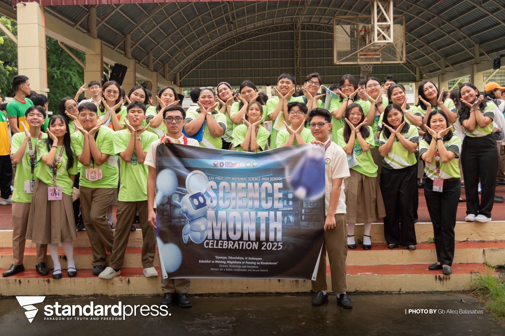
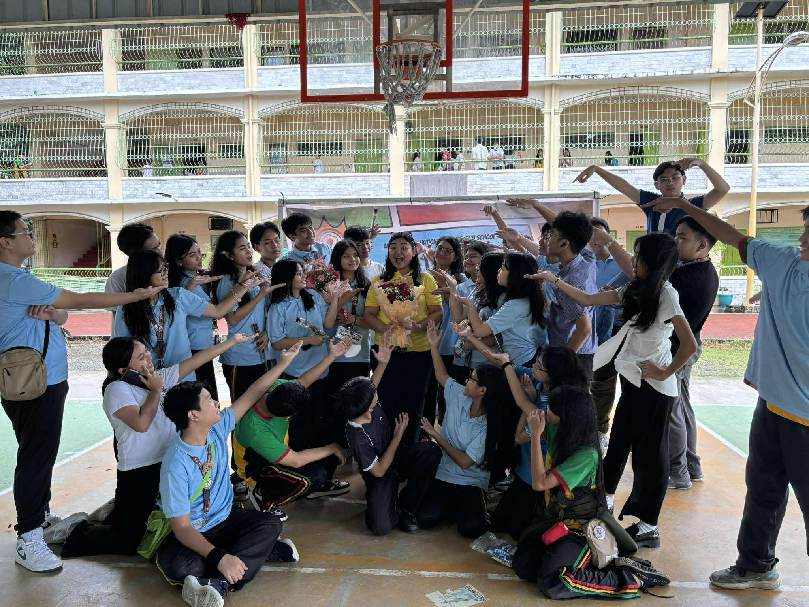
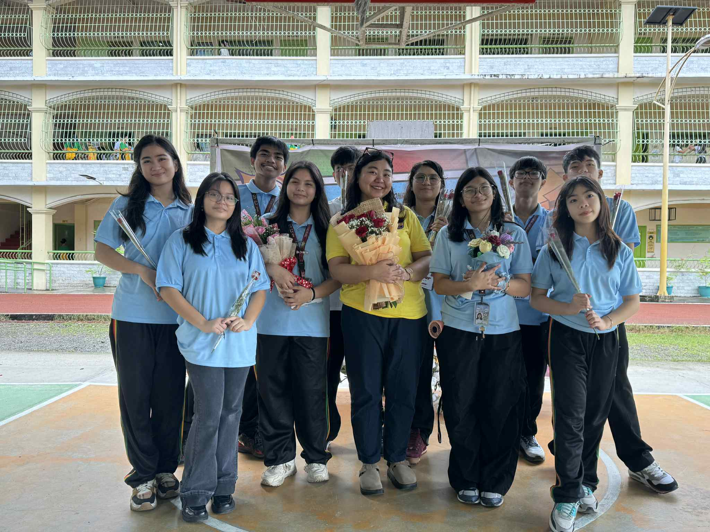
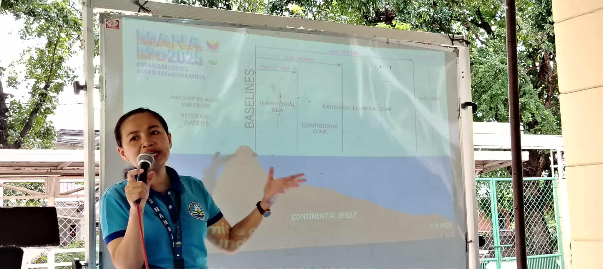
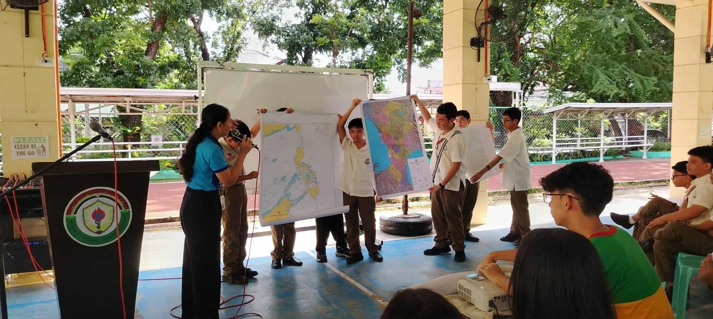

What is the most important thing I learned from the event?
I learned that it is important to continue honoring our Filipino language. By watching, participating, and enjoying the events, I realized that these activities help lift our spirits and keep our language alive.
How can I apply what I learned in real-life situations?
I can apply it by appreciating and using our Filipino language more in daily life. It reminded me to value simple things, like speaking our own language, and to cherish our culture and heritage.
Did I actively participate in the event? How?
Yes, I actively participated in Buwan ng Wika. Even though I didn’t compete, I joined the celebration by wearing a Filipiniana every Monday to show my support and pride for being Filipino.
If I were to teach this topic/subject to a classmate, how would I explain it?
I would explain that Buwan ng Wika is a meaningful celebration that honors our national language and culture. It reminds us of the importance of preserving and using Filipino in our everyday lives.
Why is it important to have an event (per subject)? Explain your answer.
It allows us to appreciate each subject beyond the classroom. Events like Buwan ng Wika give us the opportunity to learn in creative ways and strengthen our understanding and love for our culture.
Credits: Photos from Paham, Video from Kiel Reyes
Intramurals


Reflection Questions:
What is the most important thing I learned from the event?
I learned that teamwork, effort, and sportsmanship matter more than winning. Even though our team didn’t win overall, the experience taught me to value cooperation and the fun that comes from doing my best with others.
How can I apply what I learned in real-life situations?
I can apply what I learned by working well with others and staying positive even when things don’t go as planned. Success isn’t just about being first—it’s about learning, improving, and supporting one another.
Did I actively participate in the event? How?
Yes, I actively participated as part of the Blue Team. I joined the sack race and the 4x100 dash relay, where we proudly placed second in both events. It was a great experience that challenged me and helped build my confidence.
If I were to teach this topic/subject to a classmate, how would I explain it?
I would explain that Intramurals is an event that promotes friendship, teamwork, and school spirit through sports and friendly competition. It helps students develop discipline, perseverance, and respect for others.
Why is it important to have an event (per subject)? Explain your answer.
It’s important to have events like Intramurals because they give students a chance to discover their strengths outside the classroom. They encourage unity, healthy competition, and physical fitness while creating fun and memorable experiences.
Credits: Photos from the Standard Press, Video from Kiel Reyes
Science Month


Reflection Questions:
What is the most important thing I learned from the event?
I learned that Science Month is not just about experiments or lessons—it’s about practicing cleanliness, discipline, and awareness of how science affects our daily lives. Winning the cleanest classroom award showed me that teamwork and consistency can lead to success.
How can I apply what I learned in real-life situations?
I can apply what I learned by keeping my surroundings clean, being organized, and promoting eco-friendly habits. Small actions like maintaining cleanliness and recycling can make a big difference in both school and at home.
Did I actively participate in the event? How?
Yes, I actively participated by helping maintain our WINS Corner and contributing to keeping our classroom clean and neat. Our efforts paid off when our section was awarded the Cleanest Classroom for August, which made me proud of what we achieved together.
If I were to teach this topic/subject to a classmate, how would I explain it?
I would explain that Science Month encourages students to appreciate how science connects to everyday life. It helps us understand that science is not just a subject—it’s a way of thinking, observing, and improving our environment.
Why is it important to have an event (per subject)? Explain your answer.
Events like Science Month make learning more engaging and meaningful. They let students experience science beyond the classroom and inspire everyone to apply what they learn in real and practical ways.
Credits:Photo from the Standard Press, Video from Zedrick Bumanglag
Teacher’s Day


Reflection Questions:
What is the most important thing I learned from the event?
I learned that Teacher’s Day is not only about giving gifts but showing gratitude and appreciation to those who guide and inspire us. Teachers dedicate so much of their time and effort to help us learn, and it’s important to make them feel valued.
How can I apply what I learned in real-life situations?
I can apply it by being more respectful and thoughtful toward my teachers every day, not just on special occasions. A simple thank-you or kind gesture can already make a teacher feel appreciated.
Did I actively participate in the event? How?
Yes, I did. As the class president, I helped organize our class program in the court since our adviser, Ms. Gia, couldn’t go upstairs due to her pregnancy. I made sure everything ran smoothly, and we all had fun celebrating together. Later, my former classmates and I also surprised our previous adviser, Ms. Canaria—whom we call Ms. Cani—which made the day even more special.
If I were to teach this topic/subject to a classmate, how would I explain it?
I would explain that Teacher’s Day is a time to honor and give back to our teachers. It’s a reminder of how much they’ve done for us and how important it is to show appreciation for their patience, kindness, and dedication.
Why is it important to have an event (per subject)? Explain your answer.
It’s important because events like Teacher’s Day strengthen the bond between students and teachers. They remind us to be grateful and respectful, and they bring our school community closer through joy and appreciation.
Credits:Photos and Video from Sefie Labador
AP Month


Reflection Questions:
What is the most important thing I learned from the event?
I learned about the significance of the Philippines’ maritime zones and boundaries, and how they relate to our national identity and sovereignty. The symposium deepened my understanding of how our seas and resources are protected and how they contribute to our nation’s pride and security.
How can I apply what I learned in real-life situations?
I can apply what I learned by being more aware of national issues, especially those involving the West Philippine Sea. It reminded me to be a responsible and informed citizen who values our country’s territory and supports efforts to protect it.
Did I actively participate in the event? How?
Yes, I actively participated by listening attentively during the MANA Mo symposium and engaging in the activities, such as the Abot Mapa exercise that tested our map-reading skills. I also joined the AP Quiz Bee eliminations, which helped me review and apply what I’ve learned in Araling Panlipunan.
If I were to teach this topic/subject to a classmate, how would I explain it?
I would explain that the symposium helped us understand how the Philippines is an archipelagic nation with maritime zones that need protection. It also showed how geography and mapping are important in preserving our sovereignty and natural resources.
Why is it important to have an event (per subject)? Explain your answer.
It’s important because events like AP Month connect classroom lessons to real-life situations. They help students become more socially aware, patriotic, and engaged citizens who understand the importance of our country’s history, geography, and sovereignty.
Credits: Photos from AP Club, Video from Bela Paguigan